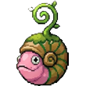

 Grass
Grass Psychic
PsychicTap a stage to read its story.
Spirulot is a small spiral-shelled snail with a pale body and a single curling green vine tendril rising from the top of its shell like an antenna. Its round sleepy eyes observe the dark forest floor from very close up, since it never climbs higher than ground level. The vine tendril moves independently, reaching toward light sources and occasionally tapping objects that interest Spirulot. When it retreats into its shell, the vine keeps swaying outside as though it hasn't noticed.
Field note: Spirulot's vine tendril grows exactly one centimetre per week, regardless of how much sunlight it receives.
Dark Forest. Spirulot and its family are found in the Dark Forest. See everyone who lives there.
Share a Bond Food that matches its types to become friends. Spirulot loves:
A Bond Food is not a trick. It joins your spirit with the Kimuro's spirit, and only when it chooses you.
Print the Kimuro adventure packs: mazes, cards, a board game and Bond Mark medals.
See the printable packs